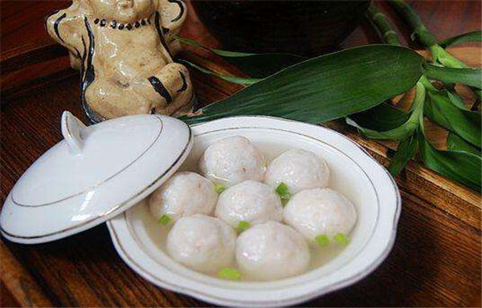

Fuzhou Cuisine - A Delightful Culinary Tradition
Fuzhou cuisine, also known as Min cuisine, is a distinct culinary heritage originating in Fuzhou, China's capital city.
Fuzhou cuisine has a centuries-long history and an amazing combination of tastes, methods, and local ingredients,
making it a cherished provincial food. Fuzhou cuisine is distinguished by delicate and mild tastes that emphasize the inherent flavor of the ingredients.
It incorporates a range of cooking techniques, including as braising, stewing, steaming, and stir-frying, all of
which are done precisely to retain the integrity of the contents. Because of Fuzhou's proximity to the ocean, one of the important elements of Fuzhou cuisine is its emphasis on using
fresh and seasonal ingredients, notably seafood. Fuzhou recipes commonly include abalone, sea cucumber, shrimp, and
various sorts of fish, which lend a lovely maritime aspect.
The cuisine also uses umami-rich items like mushrooms, bamboo shoots, and dried scallops to add depth and complexity to
the recipes. Another distinguishing feature is the use of fermented products, including as red yeast rice and fermented
soybeans, which contribute distinct tastes and textures to Fuzhou cuisine.Fuzhou cuisine is also recognized for its painstaking cooking techniques, which include perfect temperature control,
braising over low heat, and simmering over lengthy periods of time to obtain delicate and tasty results. These methods
are used to improve the natural tastes of the products while preserving their nutritional value. Fuzhou cuisine provides a varied spectrum of flavors and culinary experiences, from renowned dishes like Buddha Jumps Over
the Wall (a rich seafood soup) to specialities like lychee pork (pork cooked in a sweet and sour lychee sauce). Fuzhou
cuisine delivers a pleasant voyage through its rich tradition and distinct gourmet delights, whether you're visiting street
food booths or dining in upmarket restaurants.
Conch with Red Wine Lees

Fuzhou's Conch with Red Wine Lees, also known as "Fu Zhou Hong Zao Hai Luo" in Chinese,
is a well-known and distinctive dish in Fuzhou cuisine. It demonstrates Fuzhou chefs' inventiveness and culinary
skill.Fresh conch, a sort of giant sea snail, is served in a particular marinade of red wine lees in this meal.
crimson wine lees, also known as crimson yeast rice, are a result of the rice wine fermentation process. It has
a deep crimson hue and a rich, savory flavor.
Conch with Red Wine Lees is made by tenderizing conch meat and then marinating it in a mixture of red wine lees,
ginger, garlic, soy sauce, and different fragrant spices. The marinating procedure allows the spices to permeate
the conch meat, resulting in a flavorful and fragrant entrée. The marinated conch flesh is often stir-fried with a
mix of vegetables such as bell peppers, onions, and mushrooms. The high heat immediately sears the seasonings,
keeping the conch soft while generating a delectable mix of tastes.
The mix of soft conch meat and nuanced umami flavors from red wine lees delivers a one-of-a-kind flavor experience.
The taste profile of the meal is savory, somewhat sweet, and tangy, with a rich and pleasant texture. Conch with
Red Wine Lees is a popular main dish in Fuzhou cuisine, usually served with steamed rice or noodles. It highlights
Fuzhou chefs' culinary ability in crafting creative meals that combine local products and traditional cooking
procedures. This dish is highly praised in Fuzhou for its particular flavor and is a must-try for seafood
aficionados and those wishing to discover Fuzhou cuisine's wide and pleasant offerings.
Lychee Porks

Lychee Pork from Fuzhou, also known as "Fu Zhou Lai Wan" in Chinese,
is a popular dish in Fuzhou that mixes the sweetness of lychees with juicy pork. It's a delectable combination of tastes
and textures that highlights Fuzhou chefs' culinary ingenuity. Lychee Pork is made by marinating delicate slices of
pork and then stir-frying them with a mixture of ingredients that commonly includes lychees, bell peppers, onions,
and a savory sauce. Soy sauce, rice wine, ginger, garlic, and other aromatic spices are frequently used in the
marinade, infusing the pork with a rich and fragrant taste.
The use of fresh lychees is the fundamental component that distinguishes Lychee Pork. Lychees are sweet and juicy
fruits with a flowery scent that give a particular sweetness and refreshing aspect to the cuisine. The mix of
delicate pork and the sweetness of lychees produces a flavorful balance. The cooking technique of stir-frying
guarantees that the pork is cooked fast over high heat, resulting in tender and delicious meat. The inclusion of
the lychees at the end of the cooking process aids in the preservation of their freshness and texture.
The meal is notable for its brilliant colors, with the redness of the pork and the bright colours of the lychees and
bell peppers providing a visually pleasing appearance. Lychee Pork is a delectable culinary experience because to
the sweet and savory tastes, as well as the contrasting textures of tender pork and juicy lychees. Lychee Pork is
a popular main meal in Fuzhou cuisine, usually eaten with steamed rice or noodles.
Buddha Jumps over the Wall

A well-known and admired dish in Fuzhou cuisine is Buddha Jumps
Over the Wall, also known as "Fo Tiao Qiang" in Chinese. It is a lavish and intricate soup that displays the fine
cooking and sumptuous tastes of Fuzhou cuisine. A long list of premium ingredients are painstakingly stacked and
simmered for a considerable amount of time at Buddha Jumps Over the Wall to produce a mellow and tasty soup.
Shark fin, abalone, sea cucumber, fish maw, dried scallops, chicken, Jinhua ham, and several kinds of mushrooms
are among the traditional components used in the meal.
They are then blended with a hearty chicken or pork broth, Shaoxing rice wine, and a concoction of Chinese herbs and spices in a
large porcelain pot or casserole dish. After that, the pot is covered and cooked for a number of hours to let the flavors mingle.
The end product is a thick, delicious, and extraordinarily fragrant soup. It has a complex flavor profile that blends the umami
flavors of the meats and shellfish with the subtle sweetness of the broth. The recipe is renowned for its velvety texture and the
ingredients' soft, melt-in-your-mouth quality.
Fish ball

A well-known and recognizable dish in Fuzhou cuisine is Fuzhou Fish Ball,
also known as "Fu Zhou Yu Wan" in Chinese. A savory and satiating culinary delicacy, it is a sort of fish dumpling
produced from a combination of fish paste and other ingredients.
Usually deboned and mashed into a smooth paste, fresh fish, such carp or snakehead fish, serves as the major
component in Fuzhou Fish Balls. Then, different ingredients like salt, pepper, ginger, and occasionally even
extra seafood like shrimp or squid are used with this fish paste. The mixture is then formed into tiny,
spheres—typically the size of golf balls—and boiled or steamed to cook them. The fish balls are changed throughout
the cooking process into soft, bouncy, and somewhat chewy morsels.
×